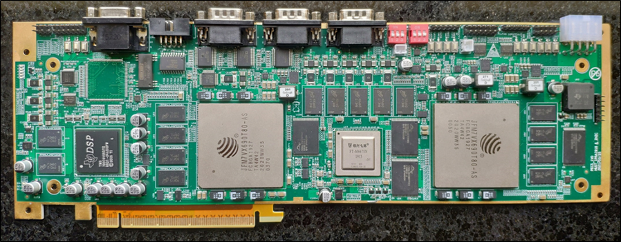

个人简历
个人信息
- 姓名： 裘剑东
- 性别： 男
- 出生年月：1998年3月
- 手机（微信同号）： 13007150520
- E-mail：1335521934@qq.com
- QQ：1335521934
- 期望岗位：与底层硬件高度相关的软件开发。Linux驱动开发，高性能计算，汇编优化，GPU并行算法开发，基础运算库开发等。
- 技术栈： C/C++，Python，CUDA，Verilog
- 期望城市：武汉
- gitee主页：https://gitee.com/jayden1998
- github主页：https://github.com/qiujiandong
- CSDN主页：https://blog.csdn.net/qq_35787848
教育背景
华中科技大学·硕士
- 时间： 2020年9月-2023年6月
- 学院： 人工智能与自动化学院
- 专业： 控制科学与工程
- 负责硬件电路设计，多核DSP软件开发，数据传输链路搭建；
- 在DSP+FPGA的系统架构上实现高准确性和实时性的KCF目标跟踪算法。
华中科技大学·学士
- 时间： 2016年9月-2020年6月
- 学院： 光学与电子信息学院
- 专业： 集成电路设计与集成系统
- 加权成绩专业第一；
- 扎实掌握数理基础知识；熟悉计算机组成原理，数字信号处理。
项目/工作经历
武汉佑驾创新科技有限公司
岗位： 感知算法工程师
- 时间： 2023年10月~至今
- 自研超声波障碍物检测算法，实现障碍物坐标定位与类型判断的功能；
- 开发基于Python和MongoDB的调试与分析工具，便于快速定位问题。
岗位： 高性能计算工程师
- 时间： 2023年7月~2023年10月
- 负责高性能算子库维护，进程间通信中间件开发与测试
- 结合OpenCV,libcarotene,libyuv处理基于Armv82架构的图像处理任务;
- 基于Nvidia的Video Codec SDK处理视频编解码任务；
- 用Bazel构建DDS通信中间件，编写单元测试。
基于国产器件的KCF跟踪算法实现与验证
- 时间：2020年9月~2023年6月
- 硕士毕业设计，项目地址：https://github.com/qiujiandong/gp-sup
- 完成从单板硬件电路设计到算法实现验证的全链路工作；
- 充分考虑计算瓶颈与系统资源，通过软硬件结合的方式优化实时性；
- 通过PCIe链路传输数据，高效评估目标跟踪算法的准确性和实时性。
图像超分辨率算法软硬件实现
- 时间： 2022年8月
- 项目地址：https://github.com/qiujiandong/bicubic
- Verilog实现Bicubic插值，将960×540图像上采样至3840×2160。
图像处理协处理单元测试
- 时间： 2022年5月-2022年10月
- 角色： DSP软件负责人
- 先前实验室完成了一款图像处理协处理单元（IPCU）的流片。我负责编写DSP软件来调用IPCU，配合负责FPGA的同学完成上位机下发的图像的处理。
Gm-APD激光雷达自动回波区间搜索
- 时间： 2022年4月-2022年6月
- 角色： DSP软件负责人
- 用于接收Gm-APD激光雷达回波的接收器需要在发射激光脉冲后延迟一段时间再打开接收窗口，防止接收器被环境光误触发而无法接收到真正的目标回波。以往设置延时都需要人来手动搜索，我们实验室提出了一种自动设置接收窗口开启延时的算法，我主要负责该算法在DSP上的实现。
2022华为嵌入式软件大赛（算法组）
- 时间： 2022年4月-2022年5月
- 角色： 单人参赛
- 赛题是一个在众多约束条件下给出最优方案的问题。共114支队伍参加华中赛区初赛，前16进入复赛。我以初赛第9的成绩成功进入华中赛区复赛，但没有在决赛中获奖。
宽带积分器
- 时间： 2021年4月-2021年5月
- 角色： 项目负责人
- 应某单位需求，需要实现一个I-V变换电路。当时项目的难点在于低频附近有运放的粉噪干扰，导致结果失真严重。我经过精心设计后实现了在37Hz-10MHz能够线性积分的积分器，并采用单4.3V锂电池供电，可通过Type-C接口充电。
极至甚低频率开关功率线性放大器
- 时间： 2020年5月-2020年11月
- 角色： 项目负责人
- 采用GaN晶体管实现的千瓦级开关功率放大器。输入0-2.2Vpp，10Hz-30kHz信号，输出电压最大100V有效值，可驱动10Ω以上负载。
骨钉定位仪
- 时间： 2019年4月-2019年10月
- 角色： 硬件负责人
- 给空心线圈施加交变的电流能够产生同频的交变磁场并且磁力线是发散的，位于两种频率的磁场中的感应线圈能够感应到不同频率的电流，通过正交解调的方式计算不同电流的大小可以得出感应线圈在磁场中的位置。基于以上原理我们设计实现了用于骨钉植入手术的辅助定位仪器，定位精度达到0.1mm。
低频微弱信号放大模块
- 时间： 2019年8月-2019年12月
- 角色： 项目负责人
- 参考国外现有产品的设计进行国产化，梳理了硬件实现的原理，替换了部分器件后实现与对标产品相同的功能。
“TI杯”全国大学生电子设计竞赛
- 时间： 2019年8月
- 角色： 硬件负责人
- G题：双路语言同传的无线收发系统
- 奖项： 省一等奖
- 将两路语音信号采用不同的载频进行调频后通过同一根天线发送，并在接收端对两路调频信号进行解调。接收端采用模拟锁相环的方案，发送端载波频率即使每秒产生10MHz的漂移，接收端也能够正确解调。
“TI杯”湖北省大学生电子设计竞赛
- 时间： 2018年8月
- 角色： 硬件负责人
- F题：无线话筒扩音系统
- 奖项： 省特等奖
- 采用Si4703实现FM接收机，采用Si4713实现FM发射机，无线话筒载波频率可以在88MHz~108MHz间任意设定，频道频率间隔为200kHz。最远通信距离超过15m。
工作成果
01 自主设计DSP+FPGA板级系统
- 时间： 2020年9月-2021年3月
- 在成为研究生的第一个学期，我绘制了一块带有两片DSP和两片FPGA的电路板原理图。参考了实验室原先的电路设计，采用了国产的DSP与FPGA。PCB的绘制以及加工、焊接外包给了其它单位完成。

02 总结DSP开发相关文档
我是在读研之后才开始接触TI的DSP开发，在学习过程中做了相应的记录。
03 DSP与FPGA间高速通信实现
DSP与FPGA间的高速通信是一些算法嵌入式实时实现的基础，在研究生二年级期间我主要对DSP与FPGA间的SRIO与PCIe通信进行了完整实现并测试了通信速率，并总结了相关文章形成专栏。该专栏目前已有上万阅读量，近200的收藏量。
04 KCF目标跟踪算法DSP实现
KCF目标跟踪算法具有运算速度快，跟踪性能好的特点，适合用于嵌入式平台的实时实现。在研二的第二个学期我仔细阅读相关论文并结合自己的思考给出了详细的推导过程，在不依赖OpenCV库的前提下，在DSP上实现了KCF算法。
学生工作
01 研究生班主任
- 时间： 2020年9月-至今
- 担任人工智能与自动化学院人工智能2002班本科生班级的研究生班主任。另外也负责班级内的党员发展对接工作。
02 图书馆信息咨询部助馆
- 时间： 2021年3月-2022年3月
- 担任学校图书馆信息咨询部助理馆员，负责数据搜索与整理的工作。编写脚本实现了一些数据的自动抓取。相关工作内容可以查看数据分析分类中的文章。
03 本科生集成第一党支部党支书
- 时间： 2019年9月-2020年6月
- 任职期间主要负责支部党员发展事务，组织支部党员开展“专业分流交流会”、“优秀党员成长报告会”等活动。带领支部获评2020年度华中科技大学“先锋党支部”荣誉称号。
04 电工电子科技创新中心助教
- 时间： 2019年9月-至今
- 暑假期间担任电工电子科技创新中心助教，参与培训题命题工作。2019年电工电子科技创新中心招新总负责人，2021年电赛信号方向助教负责人。
05 电工电子科技创新中心助管
- 时间： 2017年7月-2017年8月
- 主要负责器件的清点与取用，为暑期参加电赛的参赛队员提供力所能及的帮助。
06 校报岗送报员
- 时间： 2017年9月-2020年1月
- 主要负责校报的配送分发。每次一有送报的任务我都第一时间去完成，从大二上学期开始到大四上学期五个学期中四次获评“优秀协管员”。
个人荣誉
- 2017~2018 学年度国家奖学金；
- 2018 年湖北省大学生电子设计“TI 杯”竞赛特等奖，2019年全国电赛省一等奖；
- 第三届全国大学生集成电路创新创业大赛 NI 杯全国总决赛三等奖；
- 2018 年全国大学生 FPGA 创新设计邀请赛优胜奖；
- 2016~2017 学年度、2017~2018 学年度“华中科技大学三好学生”；
- 2020-2021学年、2021-2022学年一等硕士学业奖学金；
- 2020-2021学年度“社会活动积极分子”、“知行优秀三等奖学金”；
- 获评“优秀共青团员”、“优秀共产党员”共3次
- 获评校报岗“优秀协管员”共4次
自我评价
- 对待工作认真负责，有上进心，做事有条理，能够吃苦耐劳，善于自我激励；
- 对新的技术都有兴趣，追求有挑战性的工作；
- 遇到问题沉着冷静，力求找到最优的解决方案。